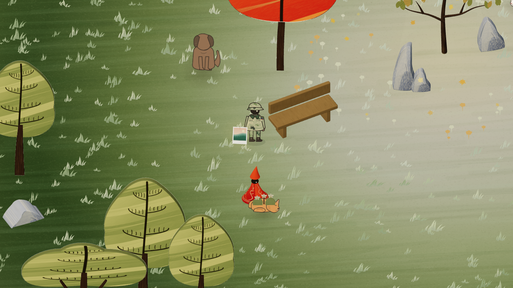
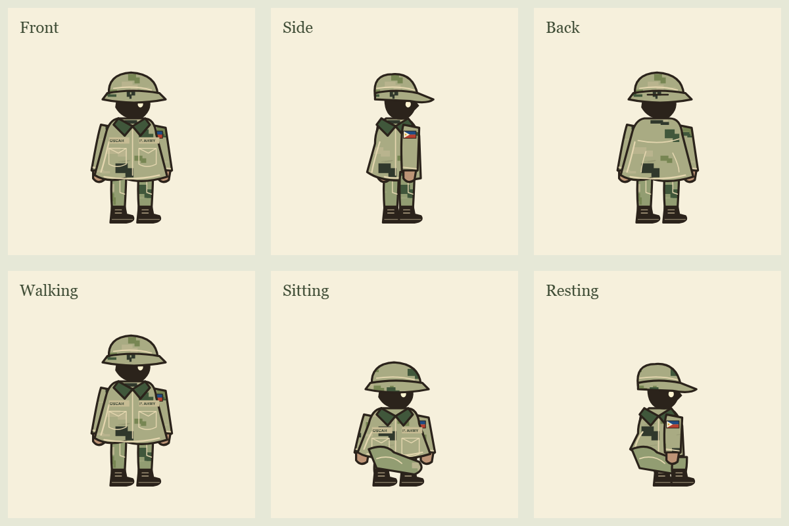
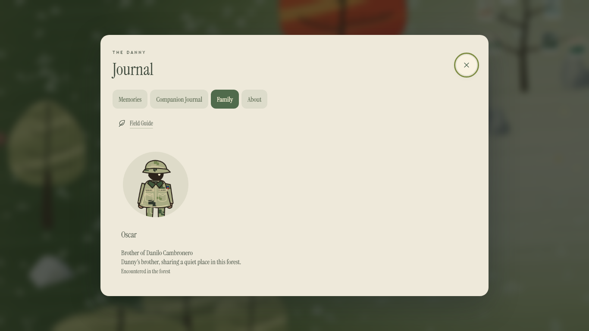

The Danny · Oscar's updated character
Oscar, in the traveler's painted style
The same small shadowed face, cream details, and softly painted silhouette. Oscar wears a Philippine Army inspired camouflage jacket, trousers, cap, and boots.
See his new outfit
His quiet routine near the bench and your conversations with him are still part of the forest.
With your main character

Character poses and family portrait


Camouflage color and clothing reference: Philippine Army PHILARPAT uniform specification.